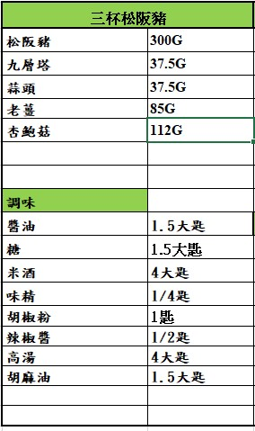

目錄
筒仔米糕
沙茶羊肉
心得
三杯松阪豬

蒜頭去頭尾，辣椒切菱形片，杏鮑菇切滾刀塊，薑去皮切片，九層塔去梗留葉子，松阪豬去筋膜切厚片，
松阪豬醃製醬油，杏鮑菇、蒜頭、辣椒、薑片過油炸至金黃後取出備用，
熱油鍋放入醃製過的松阪豬煎炒至微焦取出，加入香油爆香放入松阪豬、醬油胡椒粉糖味精胡椒粉米酒辣椒醬拌均勻後放入蒜頭杏鮑菇燜煮約兩分鐘至稍微收乾放入辣椒片，
砂鍋熱鍋放少許胡麻油放入一半九層塔炒好的料拌勻蓋上蓋子淋上米酒點火嗆香，打開鍋蓋放上剩餘的九層塔，完成